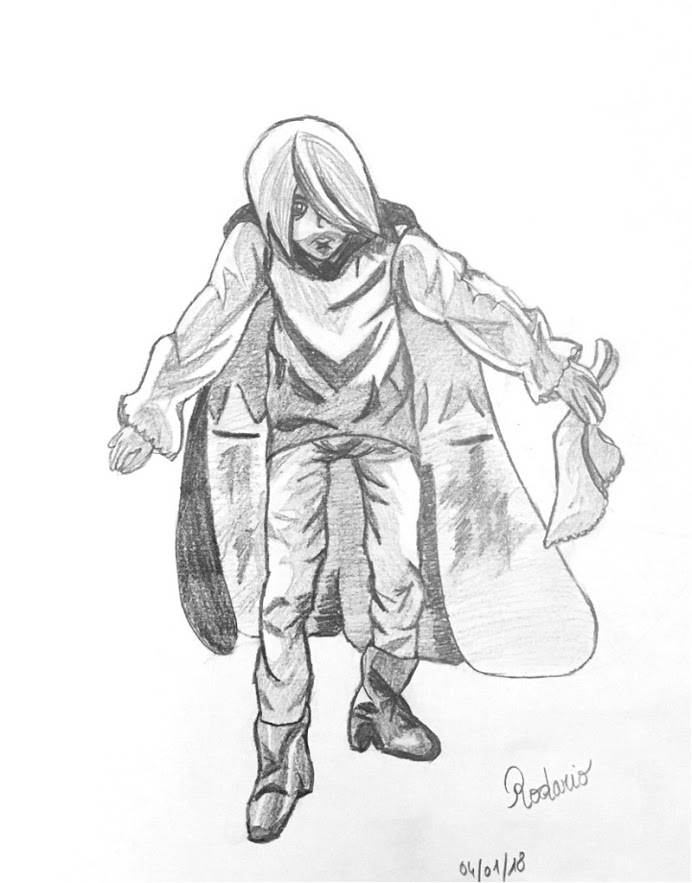

Défi 12 personnages de fantasy : Rodario
Publié le 10/01/2018 dans Dessin.
Rodario est un humain de la série Les Nains de Markus Heitz. Il est acteur et illusionniste, menant sa vie bien tranquillement en ville avec ses amis jusqu’au jour où il est contraint de s’enfuir avec notre fameux nain, Tungdil.
Je ne sais rien de Rodario, à part ce que Fano en a dit. J’aime l’idée que Rodario utiliserait son talent d’acteur pour manipuler les ennemis et faire diversion. Il userait des stratagèmes de son associé, dissimulés dans sa cape, pour créer des illusions et tromper ses adversaires. Il paraît inoffensif avec sa belle trombine et ses cheveux gominés, mais il est redoutable et est un accolyte indispensable.
